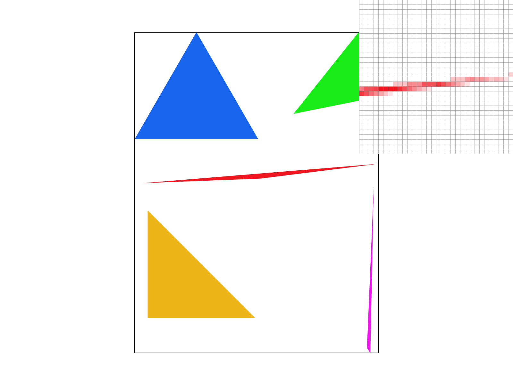
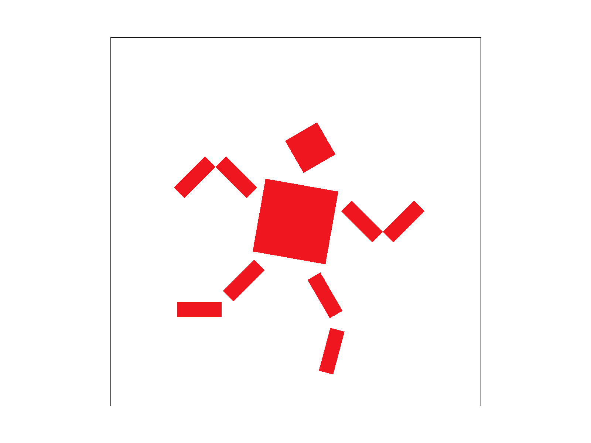

CS184 Homework 1
Jay Chiang (3035782580)
Task 1: Drawing Single-Color Triangles (20 pts)
The goal of this task is to rasterize triangles given the coordinates of
its three vertices and the desired color. The high-level algorithm used
for this part is very straightforward: We loop over a subset of pixels
that are likely to be inside the triangle. If the pixel is inside, we
color it by calling fill_pixel(). Otherwise, we continue the
loop.
Of course, there are a few implementation details that need to be
clarified. First, the subset of pixels to sample is chosen as the bounding
box of the triangle. In other words, we simply loop over the rectangular
area specified by
[min(x0, x1, x2), max(x0, x1, x2)] and
[min(y0, y1, y2), max(y0, y1, y2)]. This ensures that we
cover the entire area of the triangle while keeping a relatively low
sample size and avoid looping over the entire image. Obviously, this
algorithm is equal in runtime complexity as the "one that checks each
sample within the bounding box of the triangle."
Next, in order to determine if a pixel is inside a triangle, we employ the
line test as explained in lecture. The line test tells us which side a
sampled point is on relative to an edge. Since points that lie on an edge
are also considered to be inside the triangle, the side of a point
simplifies to either L(sx, sy) >= 0 or <= 0. To
determine inside(sx, sy), we then simply perform the line
test on all three edges and check if the sides are the same. This way,
whether the winding order of the vertices is clockwise or
counter-clockwise, our results will be correct since we only care about
the uniformity of sides instead of the actual values. It is also important
to point out that the sampled coordinate is the center of the pixel (i.e.
sx = px + 0.5, sy = py + 0.5).
As shown below, we successfully render basic/test4.svg. However, we can
see in the inspection that there is some aliasing for the longer, slimmer,
stretched-out shapes. This is because we are limiting each pixel to be
only one exact color without any interpolation, smoothing, or filtering.
Task 2: Antialiasing by Supersampling (20 pts)
The goal of this task is to improve antialiasing by supersampling. In
other words, this process involves two parts: 1. Upsampling the original
image to create a high definition version and 2. Downsampling the high-def
version to match the dimensions of the original. The reason why this
process works is because unlike the previous version (i.e. sample rate =
1), we no longer limit pixel values to only one exact color and instead
allow pixels to take on composite, intermediate values. In other words,
imagine an edge splitting a pixel in half, where one side is red and the
other blue. By supersampling, we use that information to interpolate and
output purple instead of just red or blue, introducing more flexibility
and granularity.
As mentioned above, we have two parts to implement. First, we need to
upsample the original image to create a high definition version. We
achieved this by resizing the sample_buffer to
width * height * sample_rate whenever the sample rate changes
via GUI input. Then, in order to render the high definition image, we
modify our rasterize_triangle function. Instead of only doing
the triangle test for just the pixel itself, we check every single
subpixel. For esample, if the sample rate is 4, we divide the pixel into a
2x2 grid and check the 4 subpixels. Similar to before, if the subpixel is
within the triangle, we fill its color by modifying
sample_buffer[(sy * width + sx) + i * frame_size],
effectively dividing the sample_buffer into
sample_rate number of segments, each for one subpixel grid
entry.
Next, we implement part 2, which essentially comes down to loading tbe
sample buffer into the frame buffer and modifying the
resolve_to_framebuffer function. This is relatively easy as
we simply loop over every output pixel and taking its average color across
the sample_rate segments. The geometry/order of the subpixel
grid doesn't even matter here as we are just taking the mean.
Finally, we can see the results below. Using the same example as task 1,
we can see that when we up the sample rate to 4 and 16, we get
increasingly less aliasing and clearer edges for all 5 shapes.
Supersample rate: 1 per pixel
Supersample rate: 4 per pixel
Supersample rate: 16 per pixel

Task 3: Transforms (10 pts)
The goal of this task is to support the translate, scale, and rotate
operations for SVGs. The implementation is very straightforward. We simply
add the 3x3 transformation matrices as explained in lecture. To show that
the functionality is working correctly, I attempted to make the robot run
as displayed below.
